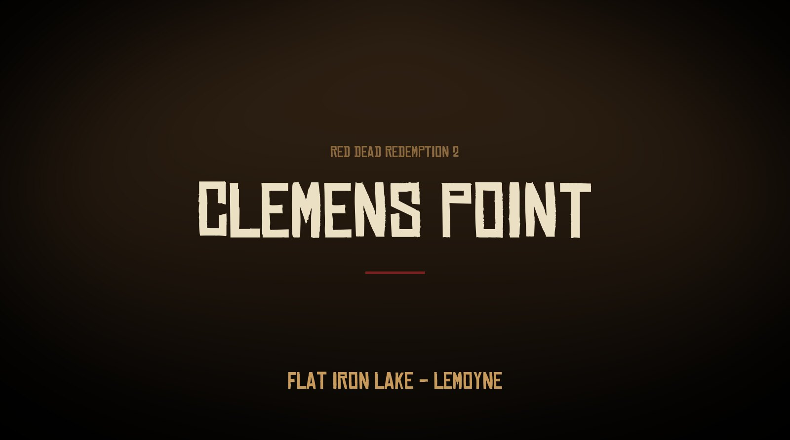
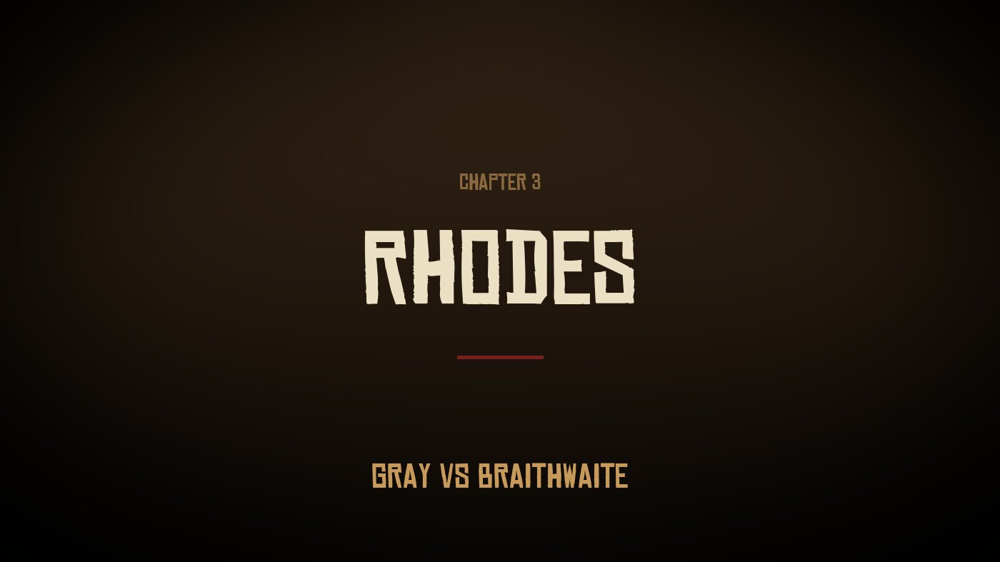
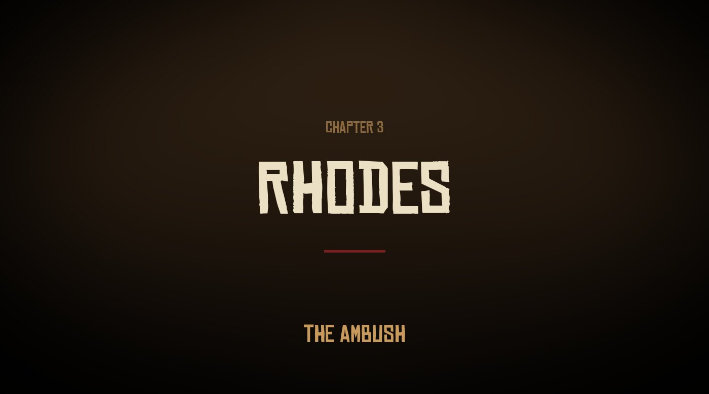

Story guide · Red Dead Redemption 2 Chapter 3: Clemens Point Red Dead Redemption 2 Chapter 3 of 6 Clemens Point, Lemoyne 1899 By Joseph Lambert · Updated June 26, 2026  Clemens Point, the gang's camp on the shore of Flat Iron Lake in the bayous of Lemoyne. After Valentine becomes too dangerous, the Van der Linde gang rides south into Lemoyne and sets up camp at Clemens Point, on the shore of Flat Iron Lake near the town of Rhodes. Chapter 3 centres on a long-running feud between two local families, the Grays and the Braithwaites, which Dutch tries to exploit. It contains the gang's first major death and ends with the kidnapping of Jack Marston. Full spoilers for Chapter 3 of Red Dead Redemption 2 follow. Setting: the Gray and Braithwaite feud Clemens Point is a lakeside camp in Lemoyne, a short ride from the town of Rhodes. Rhodes is dominated by two old, declining families: the Grays, who hold the local law through Sheriff Leigh Gray, and the Braithwaites, who own a tobacco plantation outside town. The two families have feuded for generations, and each believes the other is hiding a fortune. Dutch's plan is to work both sides and take whatever money he can from the conflict.  Rhodes, the town at the centre of the Gray and Braithwaite feud. Working both families The gang plays the two families against each other. Arthur hires on with the Grays, breaking horses and running errands to gain their trust ("The New South"), while the gang separately rustles the Braithwaites' prize horses. Hosea warns that the scheme is too clever to hold, and it does not. Sean MacGuire is killed in Rhodes In "Blessed are the Peacemakers", the Grays spring an ambush in Rhodes. Sean MacGuire, the young Irishman the gang had rescued in Chapter 2, is shot in the head and killed instantly. It is the gang's first death since the Blackwater ferry job that opens the game, and it ends the Rhodes con. Arthur and the gang fight their way out, and the Grays are wiped out as a force in the town.  The ambush in Rhodes, where the Gray con turns into a gunfight. The Braithwaites kidnap Jack Marston With the Grays gone, the gang turns on the Braithwaites. In retaliation, the family kidnaps Jack, the young son of John and Abigail Marston. The gang attacks and burns Braithwaite Manor in "Blood Feuds, Ancient and Modern". In the ruins, the family matriarch Catherine Braithwaite reveals that she has sold Jack to Angelo Bronte, the crime boss who controls the city of Saint Denis. Recovering Jack becomes the gang's reason to move on the city in Chapter 4. Other events in the chapter "A Fisher of Men" sends Arthur fishing on the lake with Jack Marston, one of the game's few combat-free missions, shortly before the boy is taken. Kieran Duffy, the O'Driscoll captured in Chapter 2, becomes a working member of the camp during this chapter, tending the horses and slowly earning the gang's trust. Key characters Chapter 3 introduces Angelo Bronte, the crime boss of Saint Denis who will drive Chapter 4, along with Catherine Braithwaite and Sheriff Leigh Gray, the heads of the two feuding families. It is also the chapter in which Sean MacGuire is killed. Arthur, Dutch, Hosea and John Marston all take leading roles in the feud. Key events of Chapter 3 The gang relocates from Horseshoe Overlook to Clemens Point, in Lemoyne. Dutch sets out to play the Gray and Braithwaite families against each other. The Rhodes con collapses into an ambush; Sean MacGuire is killed. The gang burns Braithwaite Manor. Catherine Braithwaite reveals Jack Marston has been sold to Angelo Bronte in Saint Denis. The chapter ends with the gang preparing to move on Saint Denis to recover Jack (Chapter 4). PreviousChapter 2: Horseshoe Overlook NextChapter 4: Saint Denis